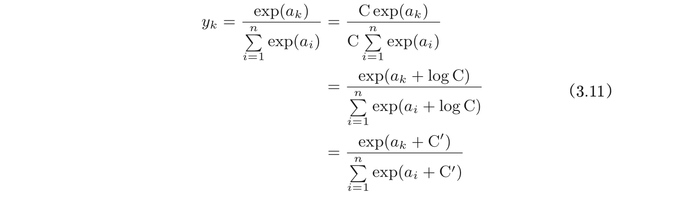
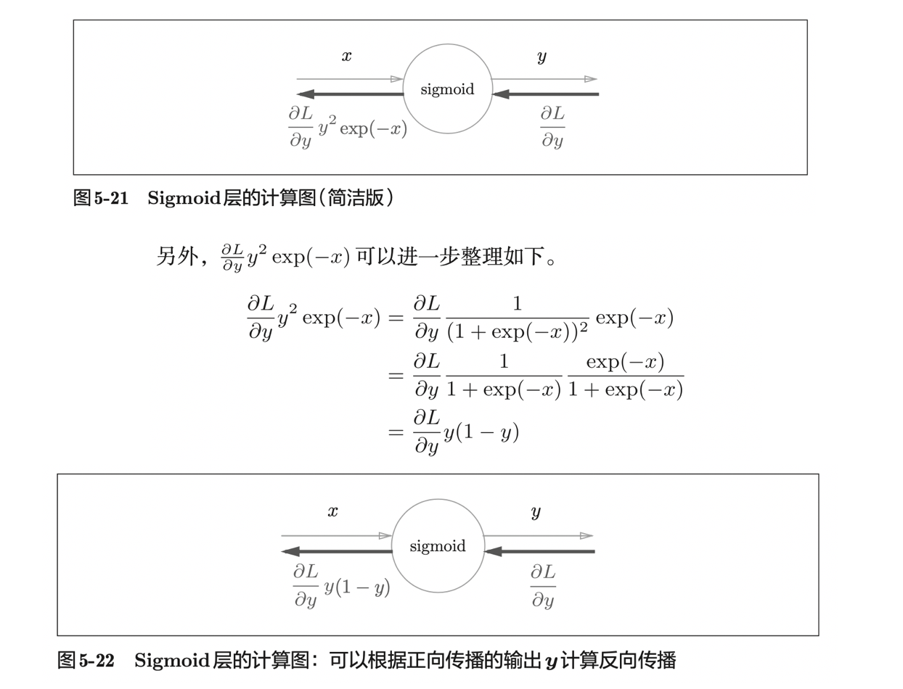

深度学习基础图书
今天又花了点时间看了一本书（第二遍）——《深度学习入门——基于 Python 的理论与实践》。
-
推荐阅读：Hacker’s guide to Neural Networks (Andrej Karpathy blog): http://karpathy.github.io/neuralnets/
全书 ≈300 页，通篇看下来涉及的数学基础非常少，读起来十分通畅，一气呵成。
这本书给我最大的收获是「误差反向传播基于计算图的推导」，把反向传播的推导细节讲得清清楚楚，让我对反向传播的推导有了更加深刻的认识。
✅ 计算图理解反向传播我在其他的书也有看到，但是我认为《深度学习入门——基于 Python 的理论与实践》这本书讲得最好。
图书行文的组织也是非常值得学习，排版、图片实属上乘。
如果有一定的基础的话，2~3 个小时，可以全部看完看懂。
照例，如下是我的读书笔记。记录下我第二遍阅读时的一些标注的地方，整理为 Markdown 形式的笔记。
我的笔记内容
1. Python
-
这本书从零开始实现深度学习。因此，除了 NumPy 库和 Matplotlib 库之外，避免使用外部库。
-
关于从零开始编程实现深度学习，我认为最好的开始是使用吴恩达老师深度学习课程配套的实验。
-
NumPy：数值计算。（另一本书：《利用 Python 进行数据分析》）
-
Matplotlib：画图
-
-
Python 的 list，切片（slicing）是一个重点。
- Python 广播（broadcast）
2. 感知机（Perceptron）
-
机器学习的课题就是将决定参数值（$w, b$）的工作交由计算机自动进行。学习是确定合适的参数的过程，而人要做的是思考感知机的构造（模型），并把训练数据交给计算机。
-
$b$ 称为偏置：是调整神经元被激活的容易程度的参数。$w$ 是权重：是控制输入信号的重要性的参数。
-
异或门：感知机通过叠加层能够进行非线性的表示。
- 单层感知机只能表示线性空间，而多层感知机可以表示非线性空间。
3. 神经网络
-
神经网络的一个重要性质是它可以自动地从数据中学习到合适的权重参数。
-
参数 $b$ 被称为偏置，用于控制神经元被激活的容易程度； $w1, w2$ 是表示各个信号的权重的参数，用于控制各个信号的重要性。
-
激活函数（Activation Function）$h(\cdot)$：作用在于决定如何来激活输入信号的总和。
- $a = b + w_1 x_1 + w_2 x_2$
- $y = h(a)$
-
激活函数是连接感知机和神经网络的桥梁。
-
感知机中使用了阶跃函数作为激活函数。如果感知机中将激活函数从阶跃函数换成其他函数，就可以进入神经网络的世界了。
-
解决 Softmax 的溢出问题：

4. 神经网络的学习
-
“学习”是指从训练数据中自动获取最优权重参数的过程。学习的目的就是损失函数为基准，找出能使它的值达到最小的权重参数。
-
传统的手工特征工程：SHFT、SURF 和 HOG。
-
损失函数：均方误差（mean squared error）交叉熵误差（cross entropy error）。
-
导数：如果导数的值为正，则通过使该权重参数向负方向改变，可以减小损失函数的值。
-
偏导数：需要将多个变量中的某一个变量定为目标变量，并将其他变量固定为某个值。全部变量的偏导数汇总而成的向量称为梯度（gradient）。梯度指示的方向是各点处的函数值减小最多的方向。
-
✅ 如果 $W \in \mathbb{R}^{2 \times 3}$，则 $dW \in \mathbb{R}^{2 \times 3}$。如果 $\frac{\partial{L}}{\partial{W}}$ 中的 $\frac{\partial{L}}{\partial{w_{11}}}$ 的值大约为 0.2，这表示如果将 $w_{11}$ 增长 h，那么损失函数的值会增加 0.2h。如果 $\frac{\partial{L}}{\partial{W}}$ 中的 $\frac{\partial{L}}{\partial{w_{23}}}$ 的值大约为 -0.5，这表示如果将 $w_{23}$ 增长 h，那么损失函数的值会减少 0.5h。因此，从减小损失函数值的观点来看，$w_{23}$ 应向正方向更新，$w_{11}$ 应向负方向更新。至于更新的程度，$w_{23}$ 比 $w_{11}$ 的贡献要大。
5. 误差反向传播法（计算图）
要正确理解误差反向传播法，作者认为有两种方法：
(1) 一种是基于数学式；
(2) 另一种是基于计算图（computational graph）。
前者是比较常见的方法，机器学习相关的图书中多数都是以数学式为中心展开论述的。因为这种方法严密且简洁，所以确实非常合理，但如果一上来就围绕数学式进行探讨，会忽略一些根本的东西，止步于式子的罗列。因此，作者希望通过计算图，帮助读者直观地理解误差反向传播法。
通过计算图来理解误差反向传播法这个想法，参考了 Andrej Karpathy 的博客和他与 Fei-Fei Li 教授负责的斯坦福大学的深度学习课程 CS231n。
计算图可以集中精力于局部计算。无论全局的计算有多么复杂，各个步骤所要做的就是对象节点的局部计算。虽然局部计算非常简单，但是通过传递它的计算结果，可以获得全局的复杂计算的结果。
计算图的优点是，可以通过正向传播和反向传播高效地计算各个变量的导数值。
一个最简单的计算图，如下图所示：
反向传播的计算顺序是，将信号 E 乘以节点的局部导数 $( \frac{\partial(y)}{\partial(x)} )$，然后将结果传递给下一个节点。
在来看一个计算图的例子（图 5-7、5-8）：
反向传播计算图
（1）加法节点的反向传播
以 $z = x + y$ 为对象，$\frac{\partial{z}}{\partial{x}} = 1,\frac{\partial{z}}{\partial{y}} = 1 $。
加法节点的反向传播只乘以 1，所以输入的值会原封不动地流向下一个节点。
（2）乘法节点的反向传播
这里我们考虑 $z = xy$。这个 式子的导数：$\frac{\partial{z}}{\partial{x}} = y,\frac{\partial{z}}{\partial{y}} = x $。
乘法的反向传播会将上游的值乘以正向传播时的输入信号的“翻转值” 后传递给下游。翻转值表示一种翻转关系，如下图 5-12 所示，正向传播时信号是 x 的话，反向传播时则是 y；正向传播时信号是 y 的话，反向传播时则是 x。
（3）ReLU 层
如果正向传播时的输 入 x 大 于 0 ，则反向传播会将上游的值原封不动地传给下游。反过来，如果正向传播时的 x 小于等于 0，则反向传播中传给下游的信号将停在此处。用计算图表示的话，如下图 5-18 所示。
（4）Sigmoid 层

（5）全连接层（Affine 层）
将这里进行的求矩阵的乘积与偏置的和的运算用计算图表示出来。
np.dot(X, W) + B
（6）Softmax-with-Loss 层
Softmax 反向传播的推导。图 5-29 为前向传播和反向传播计算图。
书中给出了详细的 Softmax 推导步骤。
（7）Batch Normalization
Frederik Kratzert 的博客 “Understanding the backward pass through Batch Normalization Layer” 里有详细说明。
6. 与学习相关的技巧
-
SGD 低效的根本原因是：梯度的方向并没有指向最小值的方向。如果函数的形状非均向（anisotropic），比如呈延伸状，SGD 可能就会呈”之“字型移动，搜索的路径就会非常低效。
-
将权重初始值设为 0 的话，将无法正确进行学习。
不能将权重初始值设为 0 呢？严格地说，为什么不能将权重初始值设成一样的值呢?
这是因为在误差反向传播法中，0 初始化会使得所有的权重值都会进行相同的更新。比如，在 2 层神经网络中，假设第 1 层和第 2 层的权重为 0。这样一来，正向传播时，因为输入层的权重为 0，所以第 2 层的神经元全部会被传递相同的值。第 2 层的神经元中全部输入相同的值，这意味着反向传播时第2层的权重全部都会进行相同的更新（回忆一下“乘法节点的反向传播”内容）。
权重被更新为相同的值，并拥有了对称的值（重复的值）。这使得神经网络拥有许多不同的权重的意义丧失了。
随机初始化（np.random.randn()）就是为了瓦解权重的对称结构。
（1）Sigmoid 函数
从图 6-10 可知，各层的激活值呈偏向 0 和 1 的分布。
Sigmoid 函数是 S 型函数，随着输出不断地近 0（或者近 1），它的导数的值逐渐接近 0。这个问题就是梯度消失（gradient vanishing）。
图 6-11 呈集中在 0.5 附近的分布。
因为不像刚才的例子那样偏向 0 和 1，所以不会发生梯度消失的问题。但是，激活值的分布有所偏向，说明在表现力上会有很大问题。
使用 Xavier 初始值后的结果如图 6-13 所示。从这个结果可知，越是后面的层，图像变得越歪斜，但是呈现了比之前更有广度的分布。因为各层间传递的数据有适当的广度，所以 sigmoid 函数的表现力不受限制。
图 6-14 为激活函数使用 ReLU 时激活值的分布。
7. 卷积神经网络
-
全连接层会忽视形状，将全部的输入数据作为相同的神经元（同一维度的神经元）处理，所以无法利用与形状相关的信息。
-
如何编程实现卷积，前向传播和反向传播，是需要重点留意的地方。
8. 深度学习
“What is the class of this image ?”的网站上，以排行榜的形式刊登了目前为止通过论文等渠道发表的针对各种数据集的方法的识别精度。
- 叠加小型滤波器来加深网络的好处是可以减少参数的数量，扩大感受野（receptive field，给神经元施加变化的某个局部空间区域）。并且，通过叠加层，将 ReLU 等激活函数夹在卷积层的中间，进一步提高了网络的表现力。
附录
附录给出了：
- Softmax-with-Loss 层的计算图反向传播详细推导
全书完。